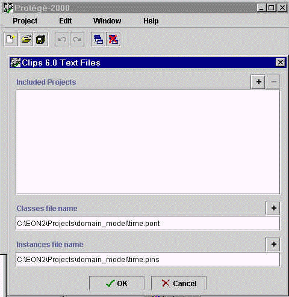

Last updated: June 30, 1999
Target version: Protégé-2000 0.911 (released on Jun 28, 1999)
Send comments and suggestions to Samson Tu
First, make sure that you really want to migrate to Protégé-2000. There is no going back. File formats for Protégé-2000 are different from those of Protégé/Win. Protégé/Win can still read pont files that do not use inclusion, but that's the extent of compatibility between the two systems.
Follow the following simple steps to convert your Protégé/Win files into Protégé-2000 projects.
A. Make sure that there are no class/slot name conflicts:
In Protégé-2000, slots and facets are global objects whose names must be distinct from names of other global object, such as classes. Protégé-2000 handles name conflicts by appending "_" to class names. Thus, make sure that such name conflicts do not occur in your ontology and among the ontologies that you include. Ultimately, when you are including ontologies from different sources, name conflict is difficult to avoid.. A future version of Protégé will support distinct name spaces for projects.
B. If you use ontology inclusion in Protégé/Win, determine the inclusion relationship among your pont files. Protégé-2000 uses the notion of projects, which points to the pont and pins files and other included projects. You must convert pont and pins files included in other projects before converting the including projects.
C. Launch Protégé-2000. Use "Import Project..." on the Project menu and select Standard Text Files in the Select Format dialog box to convert a pont and pins file into a Protégé-2000 project. (See Importing a Project for more information.) You will have to re-custom-tailor the layout of your instance editor. (See Figure 1)
See Figure 1. You must have a pont file to use Import Project. If you have a pont file but no pins file, then leave the pins file entry blank.. If you have converted files that you want to include into their own Protégé-2000 projects, you can select them and put them in the "Included Projects" window. Up to version 0.911, all pont, pins, and project files that are related through inclusion must be located in the same directory.

Figure 1 Building a set of Protégé/Win pont and pins into a Protégé-2000 project.
D. When you are ready to save the project, select Save from the Project menu. A dialog box allows you to type in or select the project name and names of the pont and pins file. All three files should be (and will be, if you just type in the project name) saved in the same directory.
E. If you have a pins file based on ontologies defined in other projects, create a new project that includes the necessary ontology, save the project with empty pont and pins files, and then rename your pins file to be the pins file of the project.
When you save the empty pins file, make sure that your real pins file has a different name; otherwise your pins file will be overwritten.
F. How to reconstruct diagrams
diagrams are not supported yet
G. How to reconstruct tables
tables are not supported yet
Next: What is Protégé-2000?